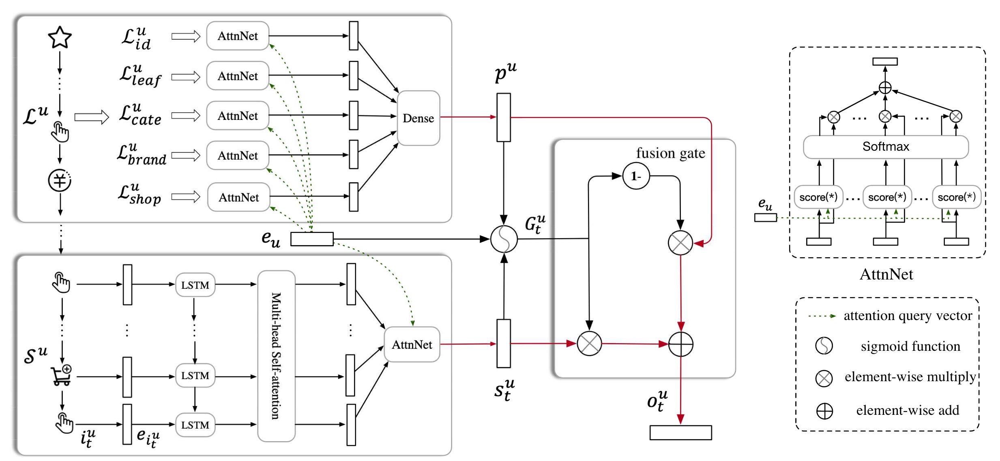

2.4.2. SDM：融合长短期兴趣，捕捉动态变化¶
MIND解决了兴趣“广度”的问题，但新的问题随之而来：时间。 用户兴趣不仅是多元的，还是动态演化的。一个用户在一次购物会话（Session）中的行为，往往比他一个月前的行为更能预示他下一刻的需求。MIND虽然能捕捉多个兴趣，但并未在结构上显式地区分它们的时效性。序列深度匹配模型（SDM） (Lv et al., 2019) 正是为了解决这一问题而提出的。SDM模型 的核心思想是分别建模用户的短期即时兴趣和长期稳定偏好，然后智能地融合它们。
{kind=link}

图2.4.2 SDM模型结构¶
2.4.2.1. 捕捉短期兴趣¶
为了精准捕捉短期兴趣，SDM设计了一个三层结构来处理用户的当前会话序列(图2.4.2 左下角) 。
首先，将短期会话中的商品序列输入LSTM网络，学习序列间的时序依赖关系。LSTM的标准计算过程为：
这里\(\boldsymbol{e}_{i_{t}^{u}}\)表示第\(t\)个时间步的商品Embedding，\(\sigma\)表示sigmoid激活函数，\(\boldsymbol{W}\)表示权重矩阵，\(b\)表示偏置向量。LSTM采用多输入多输出模式，每个时间步都输出隐藏状态\(\boldsymbol{h}_{t}^{u} \in \mathbb{R}^{d \times 1}\)，最终得到序列表示\(\boldsymbol{X}^{u} = [\boldsymbol{h}_{1}^{u}, \ldots, \boldsymbol{h}_{t}^{u}]\)。
LSTM的引入主要是为了处理在线购物中的一个常见问题：用户往往会产生一些随机点击，这些不相关的行为会干扰序列表示。通过LSTM的门控机制，模型能够更好地捕捉序列中的有效信息。
然后，SDM采用多头自注意力机制来捕捉用户兴趣的多样性。多头自注意力机制。
具体计算过程为：
其中\(Q_{i}^{u}\)、\(K_{i}^{u}\)、\(V_{i}^{u}\)分别表示第\(i\)个头的查询、键、值矩阵，\(\boldsymbol{W}_{i}^{Q}\)、\(\boldsymbol{W}_{i}^{K}\)、\(\boldsymbol{W}_{i}^{V}\)是对应的权重矩阵。
多头注意力的最终输出为：
其中\(h\)是头的数量，\(W^{O}\)是输出权重矩阵。每个头可以专注于不同的兴趣维度，通过多头机制实现对用户多重兴趣的并行建模。
最后，SDM加入个性化注意力层，使用用户画像向量\(\boldsymbol{e}_u\)作为查询，对多头注意力输出进行加权：
这里\(\hat{\boldsymbol{h}}_{k}^{u}\)是多头注意力输出\(\hat{X}^{u}\)中第\(k\)个位置的隐藏状态，\(\alpha_{k}\)是对应的注意力权重。最终得到融合个性化信息的短期兴趣表示\(\boldsymbol{s}_{t}^{u} \in \mathbb{R}^{d \times 1}\)。
对应的代码实现采用了三层架构，逐步从原始序列中提取用户的即时兴趣：
# 1. 序列信息学习层：使用LSTM处理序列依赖
lstm_layer = tf.keras.layers.LSTM(
emb_dim,
return_sequences=True, # 返回所有时间步的输出
recurrent_initializer='glorot_uniform'
)
sequence_output = lstm_layer(short_history_item_emb) # [batch_size, seq_len, dim]
# 2. 多兴趣提取层：多头自注意力捕捉序列内的复杂关系
norm_sequence_output = tf.keras.layers.LayerNormalization()(sequence_output)
sequence_output = tf.keras.layers.MultiHeadAttention(
num_heads=num_heads,
key_dim=emb_dim // num_heads,
dropout=0.1
)(norm_sequence_output, sequence_output) # [batch_size, seq_len, dim]
short_term_output = tf.keras.layers.LayerNormalization()(sequence_output)
# 3. 用户个性化注意力层：使用用户画像作为查询向量
user_attention = UserAttention(name='user_attention_short')
short_term_interest = user_attention(
user_embedding, # [batch_size, 1, dim] 用户画像作为查询
short_term_output # [batch_size, seq_len, dim] 序列作为键和值
) # [batch_size, 1, dim]
个性化注意力层的实现通过用户画像与序列特征的点积来计算注意力权重：
class UserAttention(tf.keras.layers.Layer):
"""用户注意力层，使用用户基础表示作为查询向量"""
def call(self, query_vector, key_vectors):
# 计算注意力分数：query · key^T
attention_scores = tf.matmul(
query_vector, # [batch_size, 1, dim]
tf.transpose(key_vectors, [0, 2, 1]) # [batch_size, dim, seq_len]
) # [batch_size, 1, seq_len]
attention_scores = tf.squeeze(attention_scores, axis=1)
attention_weights = tf.nn.softmax(attention_scores, axis=-1)
# 加权求和得到上下文向量
context_vector = tf.matmul(
tf.expand_dims(attention_weights, axis=1),
key_vectors
) # [batch_size, 1, dim]
return context_vector
2.4.2.2. 捕捉长期兴趣¶
长期行为包含丰富的用户偏好信息，但与短期行为的建模方式不同。SDM从特征维度对长期行为进行聚合，将历史行为按不同特征分成多个子集 (图2.4.2 左上角)：
具体包括：交互过的商品ID集合 \(\mathcal{L}^{u}_{id}\)，叶子类别集合 \(\mathcal{L}^{u}_{leaf}\)，一级类别集合 \(\mathcal{L}^{u}_{cate}\)，访问过的商店集合 \(\mathcal{L}^{u}_{shop}\)，交互过的品牌集合 \(\mathcal{L}^{u}_{brand}\)。这种特征维度的分离使模型能够从不同角度理解用户的长期偏好模式。
对每个特征子集，模型使用注意力机制计算用户在该维度上的偏好。将特征实体\(f^{u}_{k} \in \mathcal{L}^{u}_{f}\)通过嵌入矩阵转换为向量\(\boldsymbol{g}^{u}_{k}\)，然后使用用户画像\(\boldsymbol{e}_u\)计算注意力权重：
其中\(\left|\mathcal{L}_{f}^{u}\right|\)表示特征子集的大小。
最终将各特征维度的表示拼接，通过全连接网络得到长期兴趣表示：
其中\(\boldsymbol{W}^{p}\)是权重矩阵，\(\boldsymbol{b}\)是偏置向量。
对应的代码实现采用特征维度聚合的方式，对每个特征维度分别应用注意力机制：
# 从不同特征维度对长期行为进行聚合
long_history_features = group_embedding_feature_dict['raw_hist_seq_long']
long_term_interests = []
for name, long_history_feature in long_history_features.items():
# 为每个特征维度生成 mask
long_history_mask = tf.keras.layers.Lambda(
lambda x: tf.expand_dims(
tf.cast(tf.not_equal(x, 0), dtype=tf.float32), axis=-1
)
)(input_layer_dict[name]) # [batch_size, max_len_long, 1]
# 应用 mask 到特征嵌入
long_history_item_emb = tf.keras.layers.Lambda(lambda x: x[0] * x[1])(
[long_history_feature, long_history_mask]
) # [batch_size, max_len_long, dim]
# 对每个特征维度应用用户注意力
user_attention = UserAttention(name=f'user_attention_long_{name}')
long_term_interests.append(
user_attention(user_embedding, long_history_item_emb)
) # [batch_size, 1, dim]
# 拼接所有特征维度的表示
long_term_interests_concat = tf.keras.layers.Concatenate(axis=-1)(
long_term_interests
) # [batch_size, 1, dim * len(long_history_features)]
# 通过全连接层融合
long_term_interest = tf.keras.layers.Dense(emb_dim, activation='tanh')(
long_term_interests_concat
) # [batch_size, 1, dim]
2.4.2.3. 长短期兴趣融合¶
有了长短期兴趣表示后，关键问题是如何有效融合这两部分信息。用户的长期行为虽然丰富，但通常只有一小部分与当前决策相关。简单的拼接或加权求和难以准确提取相关信息。
SDM设计了门控融合机制，类似LSTM中的门控思想 (图2.4.2 中间部分)：
这里\(\boldsymbol{G}_{t}^{u} \in \mathbb{R}^{d \times 1}\)是门控向量，\(\odot\)表示逐元素乘法，\(\boldsymbol{W}^{1}\)、\(\boldsymbol{W}^{2}\)、\(\boldsymbol{W}^{3}\)是权重矩阵。
门控网络接收三个输入：用户画像\(\boldsymbol{e}_{u}\)、短期兴趣\(\boldsymbol{s}_{t}^{u}\)和长期兴趣\(\boldsymbol{p}^{u}\)，输出的门控向量每个元素值介于0到1之间，决定了对应维度上长短期兴趣的贡献比例。这让模型能够在不同兴趣维度上分别选择保留长期或短期信息，避免简单平均可能带来的信息损失，使模型能够精确捕捉长期行为中与当前兴趣最相关的部分。
对应的门控融合实现通过学习三个权重矩阵来决定长短期兴趣的融合比例：
class GatedFusion(tf.keras.layers.Layer):
"""门控融合层，用于融合长期和短期兴趣"""
def build(self, input_shape):
dim = input_shape[0][-1]
# 为用户画像、短期兴趣、长期兴趣分别学习权重矩阵
self.W1 = self.add_weight(
shape=(dim, dim), initializer='glorot_uniform', trainable=True, name='W1'
)
self.W2 = self.add_weight(
shape=(dim, dim), initializer='glorot_uniform', trainable=True, name='W2'
)
self.W3 = self.add_weight(
shape=(dim, dim), initializer='glorot_uniform', trainable=True, name='W3'
)
self.b = self.add_weight(
shape=(dim,), initializer='zeros', trainable=True, name='bias'
)
super(GatedFusion, self).build(input_shape)
def call(self, inputs):
user_embedding, short_term, long_term = inputs
# 计算门控向量：G = sigmoid(W1·e_u + W2·s_t + W3·p_u + b)
gate = tf.sigmoid(
tf.matmul(user_embedding, self.W1) +
tf.matmul(short_term, self.W2) +
tf.matmul(long_term, self.W3) +
self.b
) # [batch_size, 1, dim]
# 门控融合：o_t = (1 - G) ⊙ p_u + G ⊙ s_t
output = (1 - gate) * long_term + gate * short_term
return output
整个SDM模型的最终实现将三个模块串联起来：
# 短期兴趣建模
short_term_interest = build_short_term_interest(
short_history_item_emb, user_embedding
) # [batch_size, 1, dim]
# 长期兴趣建模
long_term_interest = build_long_term_interest(
long_history_features, user_embedding
) # [batch_size, 1, dim]
# 门控融合
gated_fusion = GatedFusion(name='gated_fusion')
final_interest = gated_fusion(
[user_embedding, short_term_interest, long_term_interest]
) # [batch_size, 1, dim]
下面训练SDM并评估召回效果。
from funrec import run_experiment
run_experiment('sdm')
+---------------+--------------+-----------+----------+----------------+---------------+
| hit_rate@10 | hit_rate@5 | ndcg@10 | ndcg@5 | precision@10 | precision@5 |
+===============+==============+===========+==========+================+===============+
| 0.0025 | 0 | 0.0008 | 0 | 0.0002 | 0 |
+---------------+--------------+-----------+----------+----------------+---------------+